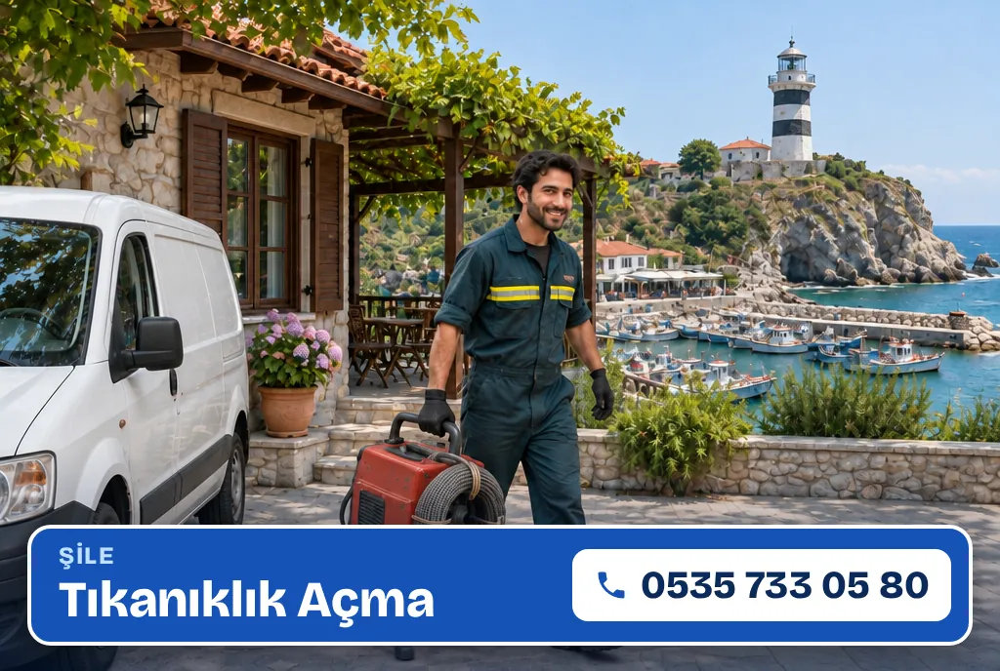

Yazlık evler
Sezon açılışında uzun süre kullanılmamış hatları açıp sifonları kontrol ediyoruz.
Şile’de yazlık evler, bahçeli villalar ve köy evleri çoğunlukta; Ağva’da ise pansiyon ve oteller var. Kış boyu kapalı kalan evlerde giderler kurur, sezon açılınca tıkanıklık ve koku ortaya çıkar. Şile tıkanıklık açma taleplerini sezon öncesi kontrol olarak da alıyoruz.

Lavabodan ana hatta
Şile’de birçok adres şehir kanalına değil foseptiğe bağlıdır. Giderin yavaş akması boru tıkanıklığından da, dolan foseptikten de olabilir. Şile gider açma işinde önce bu ayrımı yapıyoruz; foseptik doluysa bunu açıkça söylüyor, boşa işlem yapmıyoruz.
Aşağıdaki giderlerin hepsine Şile’de aynı ekip bakıyor; ayrı ayrı usta aramanıza gerek yok.
İlçeyi tanıyarak çalışıyoruz
Sezon açılışında uzun süre kullanılmamış hatları açıp sifonları kontrol ediyoruz.
Ağva’daki işletmelerde misafir yoğunluğundan önce toplu gider kontrolü yapıyoruz.
Bahçeden geçen uzun hatlarda kök ve toprak dolması için kamerayla bakıyoruz.
Mahalle mahalle
Şile ilçesinin bütün mahallelerine geliyoruz. Mahalleniz listede yoksa da arayın; adresinizi söylediğinizde ne zaman orada olabileceğimizi bildiririz.
Şile için arayınDört adımda
Telefonda ilçeyi, adresi ve hangi giderin tıkandığını söyleyin.
Size en yakın ekip, gerekli makineyle adresinize doğru yola çıkar.
Tıkanıklığın yerini bulur, yapılacak işi ve ücreti başlamadan önce söyleriz.
Hattı açar, bol suyla akışı birlikte kontrol ederiz.
Merak edilenler
Şile merkez ve Ağva, Anadolu Yakası’nın en uzak noktaları. Varış süresi 40 dakikayı aşar; aradığınızda bulunduğumuz yere göre gerçekçi bir saat veriyoruz.
Ücret; tıkanıklığın yerine, hattın uzunluğuna ve kullanılacak yönteme göre değişir. Adreste hattı gördükten sonra yapılacak işi ve ücreti işe başlamadan önce söylüyoruz. Onayınız olmadan işlem yapmıyoruz.
Evet. Şile’de gece, hafta sonu ve resmî tatillerde de çalışıyoruz. Günün hangi saatinde olursa olsun 0535 733 05 80 numarasını arayabilirsiniz.
Tıkanıklıkların büyük bölümü spiral makineyle, fayans ya da duvar kırılmadan açılır. Hatta kırık, çökme gibi bir hasar varsa bunu kamerayla gösterir, seçenekleri size anlatırız.
Anadolu Yakası
Beklemeyin, su taşmadan arayın. Ekibimiz yolda olsun.